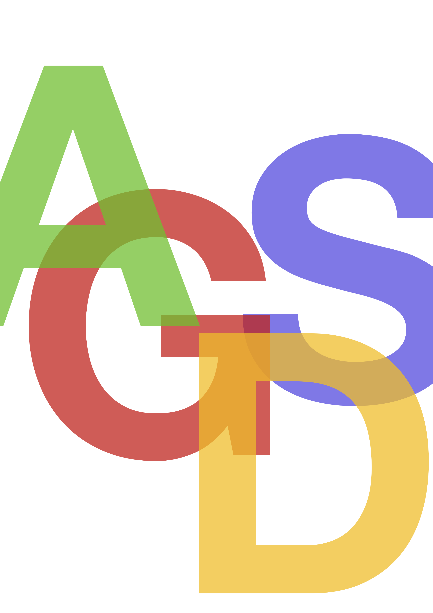
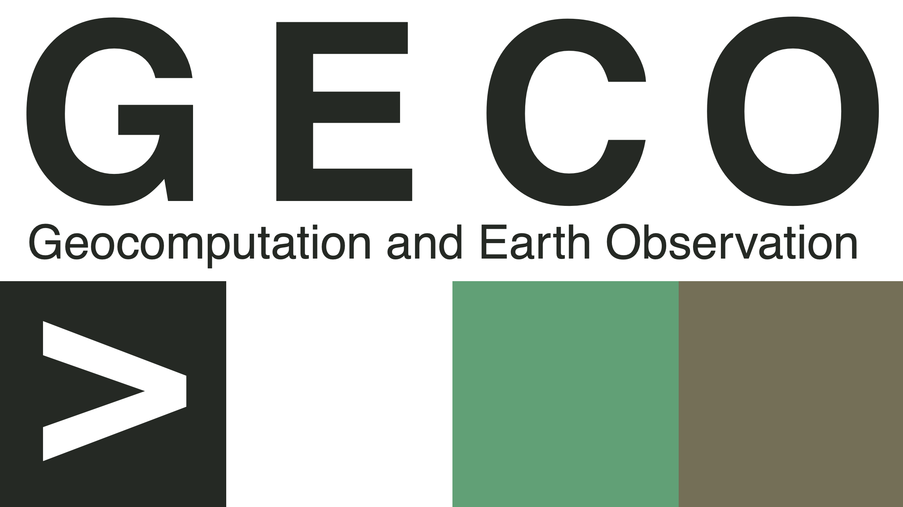

Applied Geodata Science
Preface

About this book
This book serves as the basis for the series of courses in Applied Geodata Science, taught at the Institute of Geography, University of Bern. The starting point of this book were the tutorials edited by Benjamin Stocker, Loïc Pellissier, and Joshua Payne for the course Environmental Systems Data Science (D-USYS, ETH Zürich). The present book was written as a collaborative effort led by Benjamin Stocker, with contributions by Pepa Arán and Koen Hufkens, and exercises by Pascal Schneider.
The target of this book are people interested in applying data science methods for research. Methods, example data sets, and prediction challenges are chosen to make the book most relatable to scientists and students in Geography and Environmental Sciences. No prior knowledge of coding is required. Respective essentials are briefly introduced as primers. The focus of this book is not on the theoretical basis of the methods. Other “classical” statistics courses serve this purpose. Instead, this book introduces essential concepts, methods, and tools for applied data science in Geography and Environmental Sciences with an emphasis on covering a wide breadth. It is written with a hands-on approach using the R programming language and should enable an intuitive understanding of concepts with only a minimal reliance on mathematical language. Worked examples are provided for typical steps of data science applications in Geography and Environmental Sciences. The aim of this book is to teach the diverse set of skills needed as a basis for data-intensive research in academia and outside.
We also use this book as a reference and on-boarding resource for group members of Geocomputation and Earth Observation (GECO), at the Institute of Geography, University of Bern.
Contents
This book covers all steps along the data science workflow (see Figure 1) and introduces methods and tools to learn the most from data, to effectively communicate insights, and to make your workflow reproducible. By following this course, you will be well equipped for joining the Open Science movement.
This chapter starts by providing the context for this course: Why Applied Geodata Science? Why now?
2 Getting started and 3 Programming primers serve as primers to get readers with a diverse background and varying data science experience up to speed with the basics for programming in R, which we rely on in later chapters.
4 Data wrangling introduces efficient handling and cleaning of large tabular data with the R tidyverse “programming dialect”. The focus is on non-geospatial data. Closely related to transforming data and its multiple axes of variation is data visualisation, covered in 5 Data visualisation.
6 Data variety, 8 Code management, and 7 Open science practices introduce essential tools for the daily work with diverse data, for collaborative code development, and for an Open Science practice.
With 9 Regression and classification, 10 Supervised machine learning I, 11 Supervised machine learning II, and 12 Random Forest, we will get into modelling and identifying patterns in the data.
Chapters 2 Getting started up to 12 Random Forest serve as lecture notes for Applied Geodata Science I and as learning material for students and scientists in any data-intensive research domain. These chapters are not explicitly dealing with geospatial data and modelling. Modelling with geospatial and temporal data is the subject of the course Applied Geodata Science II and will be introduced with a focus on typical applications and modelling tasks in Geography and Environmental Sciences. Respective materials are not currently contained in this book but will be added here later.
All tutorials use the R programming language, and a full list of the packages used in this course are provided in Appendix 14 References.
Links
License
Images and other materials used here were made available under non-restrictive licenses. Original sources are attributed. Content without attribution is our own and shared under the license below. If there are any errors or any content you find concerning with regard to licensing or other, please contact us or report an issue. Any feedback, positive or negative, is welcome.

This work is licensed under a Creative Commons Attribution-NonCommercial 4.0 International License.
How to cite this book
Benjamin Stocker, Koen Hufkens, Pepa Arán, & Pascal Schneider. (2023). Applied Geodata Science (v1.0). Zenodo.
